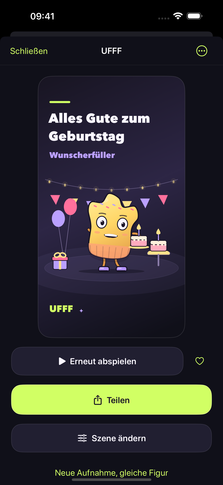
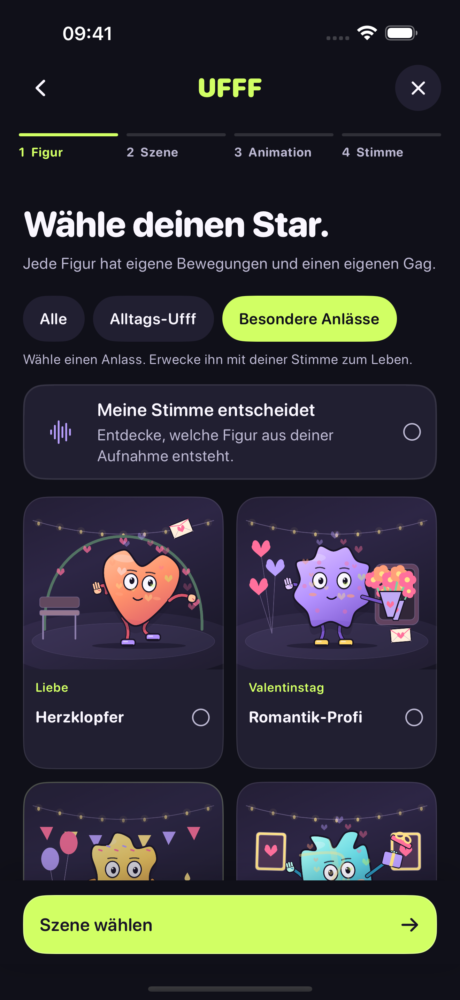

Kleiner Laut. Großer Charakter.
Lass es raus.
Mach ein
UFFF draus.
Ein tiefer Seufzer, ein alberner Satz, ein kleiner Geburtstagswunsch. Gib deiner Stimme eine Hauptrolle in deinem eigenen kleinen Cartoon.
Bald im App Store

Deine Bühne wartet
Vier Entscheidungen.
Ein bisschen Drama.
Figur → Szene → Animation → Sprachaufnahme. Dann anschauen, schmunzeln und teilen.
Figur wählen.
Eine von 18 Figuren gibt deiner Stimme ein Gesicht.
Szene aussuchen.
Entdecke unter 14 Szenen die Welt für deinen kleinen Film.
Bewegung reinbringen.
Mit 18 Animationen kommt Leben in deine Geschichte.
Stimme aufnehmen.
Wir empfehlen 5–8 Sekunden. Den Feinschliff gibt’s in der Vorschau.

Ein bisschen schräg. Ganz du.
Jede Stimme
hat Charakter.
Ein schüchternes Hallo, ein sehr langes Ufff, ein unnötig dramatischer Tag. Wähle deine Figur und lass sie im Rhythmus deiner Aufnahme lebendig werden.
- 18 Figuren
- Natürliche, hohe und tiefe Stimme
- Zwei Figuren auf einem Gerät
Geht auch ohne Anlass
Und wenn es etwas
zu feiern gibt…
Mach aus einem „Ich liebe dich“, einem Geburtstagswunsch oder einem ganz normalen Dienstag einen kleinen Auftritt.
- Liebe
- Valentinstag
- Geburtstage
- Jahrestage
- Feiern
- Einfach so
Lernt euch erst mal kennen
Die ersten 3?
Gehen auf uns.
Drei erfolgreiche Erstellungen sind gratis. Danach kannst du mit UFFF Forever durch einen einmaligen Kauf unbegrenzt neue Figuren erstellen.
Kein Abo. Vorhandene Figuren bleiben freigeschaltet.
Nach drei kostenlosen Erstellungen ist für neue Figuren ein Kauf nötig. Abgebrochene oder fehlgeschlagene Versuche verbrauchen kein Guthaben. Der aktuelle Preis steht im Kaufdialog.
Fragen zum KaufDeine Stimme. Dein iPhone.
Aufnahmen werden auf deinem Gerät verarbeitet. Kein UFFF-Konto, keine Werbung, keine Cloud-KI. Du entscheidest, wann du etwas teilst.
So gehen wir mit Daten um